【js-01】
JS数据类型简介
小课堂【成都第60期】
分享人：左少华
目录
1.背景介绍
2.知识剖析
3.常见问题
4.解决方案
5.编码实战
6.扩展思考
7.参考文献
8.更多讨论
1.背景介绍
1995年5月，Brendan Eich只用了10天，就设计完成了这种语言的第一版。它是一个大杂烩，语法有多个来源：
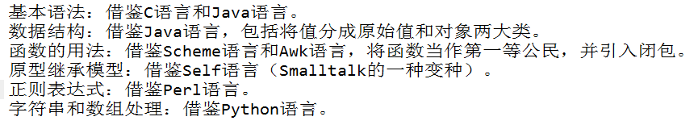javascript是一门面向对象的弱类型语言， ECMAScript的数据类型分别两类：基本数据类型和对象类型;
基本数据类型为字符串、数值、布尔值、Null、Undefined;
对象类型可以分为Object、Array、Function等;
ECMAScript6又规定了一种新的基本数据类型：Symbol.
2.知识剖析
一、基本数据类型
（1）字符串（String类型）
字符串是一个由零或多个 Unicode 字符（字母、数字和标点符号）组成的。 使用字符串数据类型表示 JavaScript 中的文本。 字符串放在单引号或双引号之中。
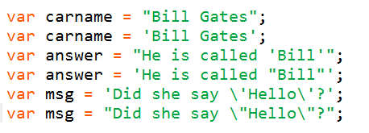字符串默认只能写在一行内，分成多行将会报错。
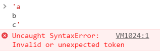 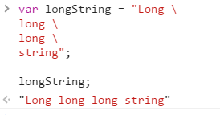
若长字符串要分成多行，可以在每一行的尾部使用反斜杠。
（2）数值（Number类型）
JS数值类型分为整数和浮点数。
JavaScript内部，所有数字都是以64位浮点数形式储存，即使整数也是如此。所以，1与1.0是相同的，是同一个数。
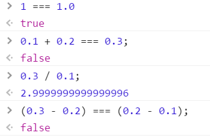数值精度
根据国际标准IEEE 754，JavaScript浮点数的64个二进制位，从最左边开始，是这样组成的。第1位：符号位，0表示正数，1表示负数；
第2位到第12位：储存指数部分；
第13位到第64位：储存小数部分（即有效数字）；
数值范围
根据标准，64位浮点数的指数部分的长度是11个二进制位，意味着指数部分的最大值是2047（211-1）。64位浮点数的指数部分的值最大为2047，分出一半表示负数，则JavaScript能够表示的数值范围为[21014, 2-1023)， 超出这个范围的数无法表示。
数值的进制
使用字面量（literal）时，JavaScript对整数提供四种进制的表示方法：十进制、十六进制、八进制、2进制。
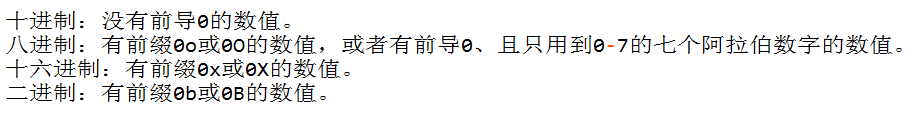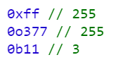 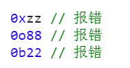 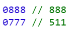
特殊数值
正零和负零
在JavaScript内部，实际上存在2个0：一个是+0，一个是-0。它们是等价的。NaN
NaN是JavaScript的特殊值，表示“非数字”（Not a Number），主要出现在将字符串解析成数字出错的场合。Infinity
Infinity表示“无穷”，用来表示两种场景。一种是一个正的数值太大，或一个负的数值太小，无法表示；另一种是非0数值除以0，得到Infinity。（3）布尔值（Boolean类型）
布尔值代表“真”和“假”两个状态。“真”用关键字true表示，“假”用关键字false表示。布尔值只有这两个值。
下列运算符会返回布尔值：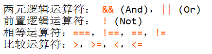
转换规则是除了下面六个值被转为false，其他值都视为true。
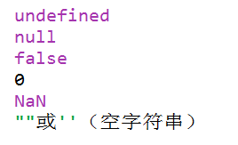
（4）Undefined类型
Undefined类型只有一个值，即特殊的undefined。使用var声明变量但未对其初始化时，这个变量的值就是undefined.

注意：包含undefined值的变量与尚未定义的变量的区别！
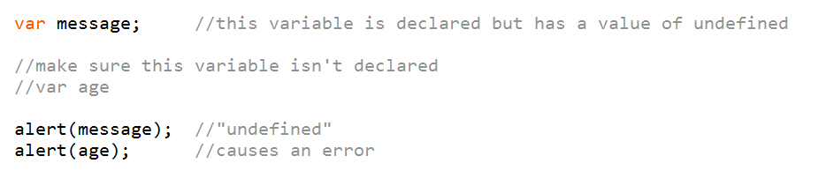
（5）Null类型
Null类型是第二个只有一个值的数据类型，这个特殊的值就是null。
从逻辑角度来看，null值表示一个空对象指针。
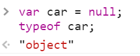如果定义的变量准备在将来用于保存对象，那么最好将该变量初始化为null而不是其他值。
（6）Symbol类型——ES6新类型
ECMAScript2015(ES6)引入了一种新的基本数据类型Symbol，表示独一无二的值。
Symbol值通过Symbol函数生成。
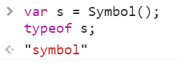二、对象类型
对象分类
对象又可以分成三个子类型。
狭义的对象（object）；数组（array）；
函数（function）；
JavaScript的所有数据，都可以视为广义的对象。不仅数组和函数属于对象，就连基本类型的数据（数值、字符串、布尔值） 也可以用对象方式调用。但是我们通常所说的”对象“都特指狭义的对象。
（6）对象
JavaScript 中的所有事物都是对象：字符串、数字、数组、日期等。在 JavaScript 中，对象是拥有属性和方法的数据。
对象由花括号分隔。在括号内部，对象的属性以名称和值对的形式 (name : value) 来定义。属性由逗号分隔：
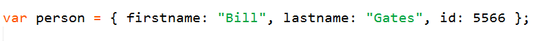属性和方法
属性是与对象相关的值。 方法是能够在对象上执行的动作。
举例：汽车就是现实生活中的对象。
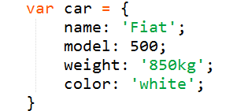 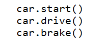
创建 JavaScript 对象
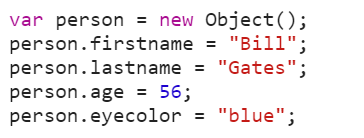访问对象的属性: objectName.propertyName
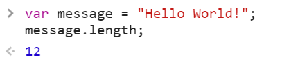访问对象的方法: objectName.methodName()
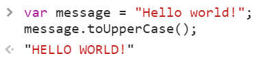（7）数组
数组用来在单独的变量名中存储一系列的值。
我们使用关键词 new 来创建数组对象或字面量语法来创建数组。下面的代码定义了一个名为 mycars 的数组对象：
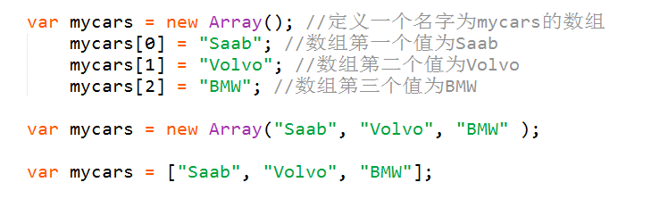数组的读写
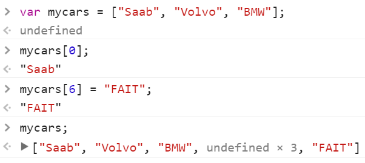（8）函数
函数是由事件驱动的或者当它被调用时执行的可重复使用的代码块。
JavaScript 函数语法
函数是由这样的方式进行声明的：关键字 function、函数名、一组参数，以及置于括号中的待执行代码。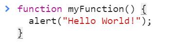
3.常见问题
Javascript数据类型的判断
举一个栗子，在登陆页面的中账号只能输入手机号码不能输入其他字符，怎么样判断输入字符的数据类型？
4.解决方案
好用的typeof
typeof可以解决大部分的数据类型判断，是一个一元运算，放在一个运算值之前，其返回值为一个字符串，该字符串说明运算数的类型。
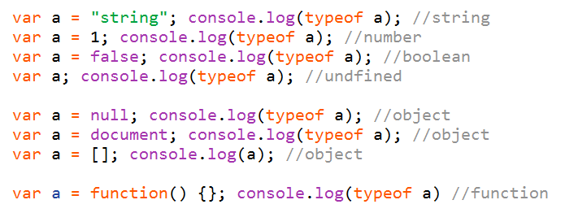这样一来就很明显了，除了前四个类型外，null、对象、数组返回的都是object类型；对于函数类型返回的则是function。
然后这里就可以再引申出另一个更具普遍性的问题，
判断数据类型的方法有哪些？
JavaScript有三种方法，可以确定一个值到底是什么类型。
typeof运算符instanceof运算符
Object.prototype.toString方法
5.编码实战
typeof运算符
instanceof运算符
Object.prototype.toString方法
6.拓展思考
javascript数据类型转换
JavaScript是一种动态类型语言，变量没有类型限制，可以随时赋予任意值。
虽然变量没有类型，但是数据本身和各种运算符是有类型的。如果运算符发现，数据的类型与预期不符，就会自动转换类型。
详细参考：数据类型转换详解
7.参考文献
《JavaScript高级程序设计》
8.更多讨论
null和undefined的区别和联系？鸣谢
感谢大家观看
BY : 左少华 | somebody